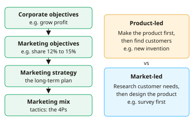

A-level Business Year 12 · Topic 4
Marketing: markets, research and customers
This topic explains what marketing is for, and how businesses find out about their markets and customers.
We calculate market size, share and growth, compare research and sampling methods, and learn to segment, target and position.
Finally we use demand and supply, and price and income elasticity, to predict how customers will react to change.
- 8 subtopics
- 277 questions
- Free: 4.1 notes and 10 questions
In this topic
- 4.1The role of marketing, marketing objectives, and product-led vs market-led approachesFree below · 26 questions
- 4.2Understanding markets: market size, growth, share, mass and niche markets, dynamic markets and market mapping (with calculations)Open in Full Marks · 40 questions
- 4.3Market research: primary and secondary, qualitative and quantitative methodsOpen in Full Marks · 31 questions
- 4.4Sampling methods, reliability of research and interpreting marketing dataOpen in Full Marks · 70 questions
- 4.5Market segmentation, targeting and positioningOpen in Full Marks · 27 questions
- 4.6Demand, supply and market equilibrium (diagrams and shifts)Open in Full Marks · 32 questions
- 4.7Price elasticity of demand: calculation, interpretation and business usesOpen in Full Marks · 24 questions
- 4.8Income elasticity of demand: calculation, interpretation and business usesOpen in Full Marks · 27 questions
4.1 · Free notes
The role of marketing, marketing objectives, and product-led vs market-led approaches

Key points
- Marketing is the process of identifying, anticipating and satisfying customer needs profitably. It links the business to its customers and to the market it operates in.
- The main roles of marketing are to understand customers through market research, build a brand and customer loyalty, create competitive advantage, and raise sales and profit.
- Marketing objectives are specific targets for the marketing function. Examples are raising market share from 12% to 15%, increasing sales volume or value, entering a new market, raising brand awareness, improving customer retention, and launching a new product.
- Marketing objectives must support the corporate objectives of the business. They should be SMART (specific, measurable, achievable, realistic, time-bound), for example 'raise market share from 8% to 10% by December 2027'.
- Do not confuse objectives with strategy. The marketing strategy is the long-term plan to achieve the objectives, and the marketing mix (product, price, place, promotion) is the set of tactics that carries it out.
- Marketing objectives are shaped by internal factors (finance, production capacity, skills) and external factors (competitors, the economy, technology, changing tastes). Objectives may need revising as conditions change.
- A product-led (product-orientated) business designs and makes the product first, then looks for customers. It relies on technical expertise and innovation, as in pharmaceuticals or Dyson-style inventions.
- Advantages of product-led: it can create genuinely new and differentiated products and markets, and customers may not be able to imagine such products. Disadvantages: demand is unproven, so there is a high risk of costly failure.
- A market-led (market-orientated) business researches customer needs first, then designs products to fit. Advantages: lower risk, products match demand, and stronger customer loyalty.
- Disadvantages of market-led: research is costly and slow, customers may not predict future needs, and rivals researching the same customers may produce 'me-too' products. Most firms blend both approaches.
- Evaluation tip: product-led suits breakthrough technology and dynamic markets. Market-led suits competitive markets with stable, identifiable needs. Always link your answer to the context given.
In more detail
- Product-led example: Dyson's bagless vacuum cleaner was driven by engineering first, and only then marketed to customers.
- Market-led example: supermarkets add ranges such as plant-based ready meals after research shows customer demand is changing.
- Asset-led marketing: a middle path where a firm builds on its existing strengths, such as a strong brand moving into a related product, while still checking what customers want.
- Worked objective: "raise market share from 12% to 15% within two years" means a rise of 3 percentage points, which is a 25% increase in share.
Practice
The role of marketing, marketing objectives, and product-led vs market-led approaches: 10 questions
Pick an answer to check it, or open the answer for the explanation.
1. Which is the best definition of marketing?
- Identifying, anticipating and satisfying customer needs profitably
- Advertising products through TV, social media and print
- Setting prices to maximise profit on each unit sold
- Persuading customers to buy whatever the firm has produced
Show answer
A: Identifying, anticipating and satisfying customer needs profitably. Marketing is broader than advertising or selling. It identifies and meets customer needs at a profit, using research and the 4Ps.
2. A firm invents a new fitness device, builds it, then looks for people who might buy it. This approach is best described as:
- Market-led
- Customer-led
- Product-led
- Research-led
Show answer
C: Product-led. The product comes first and customers are sought afterwards. That is a product-led (product-orientated) approach.
3. Which is a likely disadvantage of a market-led approach?
- Products are launched with no knowledge of customer demand
- Market research is never needed
- The firm cannot adapt to changing customer tastes
- Rivals researching the same customers may produce similar 'me-too' products
Show answer
D: Rivals researching the same customers may produce similar 'me-too' products. If all firms research the same customers they may end up with similar products. Unproven demand is a product-led risk.
4. Which of these is a marketing objective?
- Reduce labour turnover from 20% to 10% this year
- Cut unit production costs by 8% by next March
- Raise the dividend paid to shareholders by 5%
- Increase market share from 12% to 15% within two years
Show answer
D: Increase market share from 12% to 15% within two years. Market share is a marketing target. The others are HR, operations and finance objectives.
5. A firm sells 50,000 units and sets a marketing objective of raising sales volume by 10%. How many units must it sell?
- 50,010
- 60,000
- 55,000
- 45,000
Show answer
C: 55,000. 10% of 50,000 is 5,000, so the target is 50,000 + 5,000 = 55,000 units.
6. Marketing objectives should be set so that they:
- Are independent of the firm's overall aims
- Ignore the resources available
- Support the corporate objectives of the business
- Focus only on short-term sales
Show answer
C: Support the corporate objectives of the business. Functional objectives such as marketing must support corporate objectives, so the whole business works towards the same aims.
7. Which of these is a marketing strategy rather than a marketing objective?
- Target young professionals with a premium range promoted mainly on social media
- Achieve 70% customer retention by 2028
- Increase sales volume by 12% in 12 months
- Raise brand awareness to 40% among 18–25 year olds
Show answer
A: Target young professionals with a premium range promoted mainly on social media. A strategy is the plan for how to compete: target market and positioning. The others are measurable targets, which are objectives.
8. Which is an advantage of a product-led approach for a firm with breakthrough technology?
- It lowers risk because research is extensive
- It guarantees demand before launch
- It can create a new market that customers had not imagined
- It removes the need for any promotion
Show answer
C: It can create a new market that customers had not imagined. Customers cannot ask for products they cannot imagine, so product-led firms can open new markets. Demand is not guaranteed.
9. Which statement about product-led and market-led approaches is correct?
- Product-led firms always spend more on market research
- Product-led approaches cannot succeed in any market
- Market-led firms never develop new products
- Market-led firms begin with customer needs; product-led firms begin with the product
Show answer
D: Market-led firms begin with customer needs; product-led firms begin with the product. The key distinction is the starting point: customer needs (market-led) or the product and technology (product-led).
10. Which is the most direct role of the marketing function?
- Negotiating wages with trade unions
- Identifying customer needs and communicating how the product meets them
- Choosing the firm's sources of long-term finance
- Setting shift patterns for production staff
Show answer
B: Identifying customer needs and communicating how the product meets them. Marketing identifies customer needs and communicates the product's benefits. The others are operations, finance and HR tasks.
Keep going in Full Marks
Full Marks has 26 questions on The role of marketing, marketing objectives, and product-led vs market-led approaches (16 more than here), set out in practice levels. You also get notes and 3D models for all 8 subtopics of Marketing: markets, research and customers, plus games, timed exams and past papers.